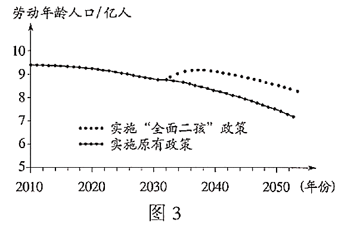
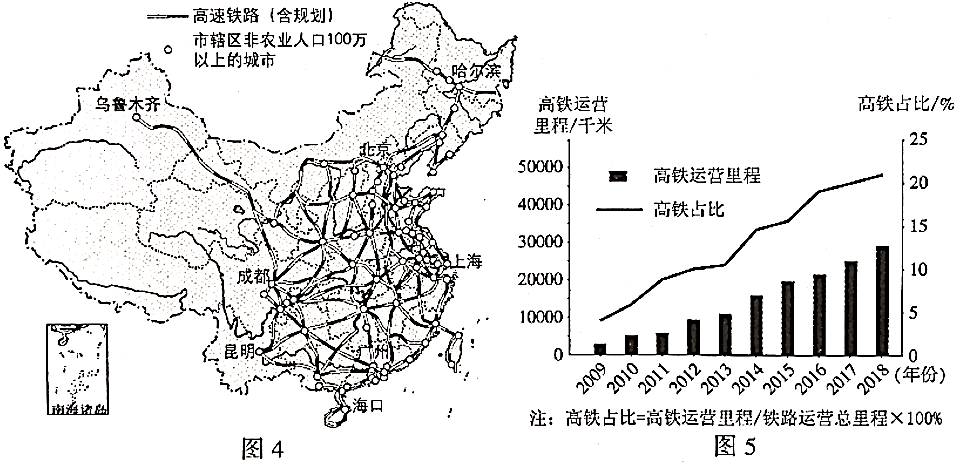

2020年北京市中考地理试题 · 选择题 第6、7、8、9、10题
国际上将年龄在15~59岁的人口划定为劳动年龄人口。我国2016年1月起实施的“全面二孩”政策将影响未来劳动人口数量，图3为我国劳动年龄人口变化预测图。读图，完成第4~6题。

6．我国从“人口大国”走向“人才强国”，需
①宣传“全面二孩”政策②完善社会养老服务体系
③提升全民科学文化素养④倡导全民终身学习理念
A．①②B．①③C．②④D．③④
“沧桑巨变七十载，民族复兴铸辉煌”。高速铁路承担客运服务，发展迅速，已成为国家名片。图4为中国高速铁路分布图，图5为中国高铁运营里程及占比统计图。读图，完成第7~9题。

7．我国高速铁路
A．在东北地区分布最稀疏B．在地势第一级阶梯上集中分布
C．在平原地区分布均匀D．稠密区与城市密集区分布一致
8．2009~2018年间，我国高铁
A．运营里程持续增长B．运营里程匀速增长
C．占比2013年最低D．占比2017年后增长最快
9．我国发展高铁可以
①加快矿产外运，发挥资源大国优势
②推动技术研发，促进现代制造业发展
③加强城乡联系，带动经济全面发展
④促进对外联系，加强国际交流与合作
A．①②③B．①②④C．①③④D．②③④
浙江省宁波某口罩厂从大连购买5万吨聚丙烯颗粒，用于生产医用外科口罩。图6为口罩产销过程示意及我国部分工业基地分布图。读图，完成第10~13题。

10．石油是
A．可再生的森林资源B．可再生的淡水资源
C．非可再生的矿产资源D．非可再生的生物资源